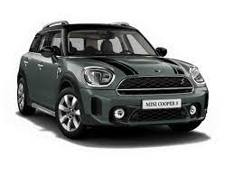

The Mini is a small, two-door, four-seat car, developed as ADO15, and produced by the British Motor Corporation (BMC) and its successors, from 1959 until 2000. Minus a brief hiatus, original Minis were built for four decades and sold during six, from the last year of the 1950s into the last year of the 20th century, over a single generation, as fastbacks, estates, and convertibles.
|  | |